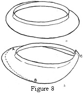
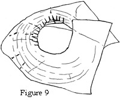
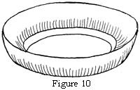
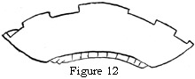
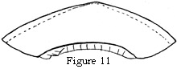
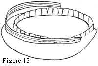
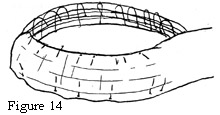

1925—Millinery
by Jane Loewen
CHAPTER II—MOLDED FRAMES
I. MOLDED OR PRESSED FRAMES
PROCESS OF MANUFACTURE
The original model for a pressed frame is a wire frame made by the designer (see Chapter I, section I). A model which is to be used for a manufacturer's mold must be a very firm frame closely braced, with any roll or bend perfectly outlined. For an irregular shape an extra, straight brace is usually added between each of the eight ordinarily used, making sixteen straight brace wires. The round braces should be about ½ inch apart.
The wire model now goes to the molding room, where the block makers make a plaster cast or mold from it.
From the plaster cast a wooden mold is whittled or carved. This wooden block is kept in stock, as it may be used for shaping straw shapes as they are sewn by makers before sizing and blocking.
From the wooden block an hydraulic steel die is made. This consists of two forms, upper and lower, which fit together like an acorn in its cup.
In making the pressed frame buckram or net is soaked in water or a sizing solution and stretched over the heated lower steel die. The top half of the die is clamped down over it and left until the frame material is thoroughly dry. At least two men are required to operate this die, or press machine.
After the frame is pressed, the rough edges extending beyond the die must be trimmed, the headsize cut out, and the edge wired and bound by machine.
COST OF MANUFACTURE
Pressed crowns are made in much the same way as brims. After all the expensive process of mold-making, two men are required to operate the machine on which the frames are pressed. On the average, the first frame made on an hydraulic die costs from $300 to $600. It may readily be seen that an enormous number of frames must be sold before the original cost is covered. In other words, the thousands of frames that must be sold from one die tend to make the shape a common one. Producers of exclusive millinery prefer to make hand-molded frames or to change the shape of the French frame in order to differentiate it.
ADVANTAGES OF USING A PRESSED FRAME
There are a number of advantages in using a pressed frame. Much expensive labor is saved. It takes almost as much time to prepare a hand-blocked frame as it takes to make the hat. The cost factor to the hat manufacturer is much less for a machine frame. The machine frame will stand more unskilled handling than a hand-molded frame. The pressed frame has a smoother and more finished appearance than a handmade frame.
To the uninitiated home milliner the hand-modeled frame often seems unfinished and imperfect. They see the rough-appearing surface rather than its beauty of line.
Pressed frames may be purchased from the millinery departments of the large department stores, from the better of the 50¢ and $1 stores, and from many of the mail-order houses.
ADJUSTMENT OF PRESSED FRAME
The average pressed shape should be purchased with the idea of changing it to suit the individual before using it.
1. To adjust the headsize. The headsize may be made larger by slashing the brim from headsize to edge and inserting a piece of buckram or elastic net. Rip the edge binding and the wire where it is lapped. Pin in the necessary piece of material. Try on the frame. Adjust the size. Bend the set-in piece at the headsize as the frame headsize is bent. Sew the seams firmly by machine or with a tight backstitch. Replace the edge wire with binding. To make the headsize smaller rip the binding and edge wire joining. Slash from edge to headsize and lap until the headsize fits. If the frame is a great deal too large, two slashes—one at the front and one at the back—are necessary. Too much lapping will throw the frame out of shape.
2. To make a mushroom from a sailor. To make a mushroom from a straight sailor brim cut the brim at the back and front from edge wire to headsize, ripping the edge binding and edge wire. Make a seam which laps very little at the headsize, but a great deal more at the edge. Taking from the edge and not from the headsize is what gives the mushroom effect. Trim some width of brim from the front and more from the back. The conventional mushroom needs to be proportionately narrower in front than a sailor, because when a frame droops it hides the face. A narrow back (see Figure 8) is always better because, first, a wide drooping effect makes thick-looking shoulders, and, second, because it interferes with comfort by knocking against coat collars, car windows, and seat backs.
Figure 8. To Make a Poke Brim from a Mushroom Frame. Illustration a is a plain mushroom brim from which a poke may be cut. In b note the lapped seam C and the dotted line A B for cutting the front.
3. To make a poke from a mushroom. This process is much the same as above, because the frame is already mushroom. Rip the binding and edge wire. Cut the back from edge to headsize. Slant the seam so that the edge laps from one to two inches and the headsize laps only ¼ inch.
4. To use a pattern on a pressed frame. Many of the mushroom-hat patterns may be cut from an ordinary pressed-sailor or mushroom frame. Cut off the headsize slashes of the pattern on the line marked "headsize." Pin the pattern onto the mushroom brim. Mark the correct edge and cut.
This does away with the necessity of wiring a headsize and with the bother of looking for correct frame material. The original edge binding may be replaced. Silk brace wire is more satisfactory for the edge wire. Poke patterns may be cut from mushroom frames in the same way. The important thing is to get the same slant and the same proportion as the hat pattern so that the same pattern may be used to cut the hat materials.
II. HAND-MOLDED FRAMES
FRAMES OF VARIOUS MATERIAL STRETCHED ON WIRE
There are a number of frame materials that may satisfactorily be used for stretching frames. The ones most used are willow, buckram, jockey, elastic net, rice net, and crinoline.
Willow: See Chapter I, section I.
Buckram: See Chapter I, section I.
Jockey: See Chapter I, section I.
Elastic net: See Chapter I, section I.
Rice net is a frame material which is as much a net as wire window screening. A thread net held together by sizing (or starch) would properly define it. Cape net is the same thing with finer mesh. Rice net is used for stretching soft crowns and for small brims of very soft ribbon or braid sport hats. It makes a softer frame than elastic net. It is sometimes used with a thickness of crinoline.
Crinoline is used to stretch soft tam crowns, baby hats, old ladies' bonnets, and with rice net for larger hats. When crinoline and rice net are used together the two materials are stretched one over the other, pinned separately, but dried and removed together. The sizing sticks them together so that they hold nicely.
PROCESS OF MAKING A STRETCHED FRAME
1. Soaking frame fabric in water. The first step in stretching a hand-molded frame is to soak the frame material to be used. Each of the fabrics mentioned under section II of this chapter has a great deal of sizing.
This needs only to be wet to become pliable. Then it may be stretched over any desired frame and it will dry in that shape.
2. Pinning frame fabric to the wire frame. Start pinning at the front on the edge wire. Use a bias corner of the willow. Pin to first one side of the brim, then to the other. Smooth the wet fabric over the wire frame, adding first a pin at the edge wire, then one at the headsize. Cut out a small headsize circle. Slash the material at the headsize to the lower headsize wire at intervals of ½ inch. Do not slash below the lower headsize wire. Smooth all fullness out by pulling it out at the edge and headsize and pushing it backward to the seam.
Trim the headsize slashes, leaving only enough to pin over the top headsize wire.
Do not bend the material over the edge wire. Allow it to extend beyond the wire. Place pins at intervals of one inch.
Be careful not to pull the frame too tightly between the straight brace wires, or the edge wire will lose its contour. There will be an angle on each straight brace at the edge wire.
3. Drying frame fabric on the frame. Hang the stretched frame up to dry above a hot radiator or in a window, if you want it to dry quickly. A good idea for class work is to stretch the frames in one lesson that are to be used for the next day. Then they may stand overnight. A frame must be thoroughly dried before it is removed from the wire mold.
Figure 10. Original Frame. A Rolled Brim Made from the Dimensions Given in Chapter I, Section IV.
4. Removing fabric frame from the mold. When the frame is thoroughly dry, mark edge wire, headsize wire, and seam with a pencil. Pull out the pins from edge and headsize. Place them in a separate box to be used for frames only. The starch on them will mark silk or velvet. Loosen the frame carefully at both edge and headsize. Remove a little at a time so as not to stretch it out of shape. Trim the back seam and lap it as it was marked if the headsize is the correct size. The headsize may be adjusted as for a pressed brim (see Chapter II, section I).
Cut headsize and wire edge at the pencil mark.
5. How to give variety to shapes stretched on the same frame. If a wire mold has a good headsize roll as well as a becoming brim line, it may be changed in a variety of ways.
The brim may be merely cut smaller. It may be slashed at the side, or it may be cut to give an entirely different effect (see illustration, Figures 11 and 12).
Figure 11. The Same Frame Made into a Tricorn.
Figure 12. The Frame Made into a Square-Edge Tricorn.
6. To wire a frame. For the headsize, cut a half-inch bias band of dry frame material. Join this in a circle the same size as the brim headsize. Wire the lower headsize with brace wire, using a blanket stitch.
Lap the ends of the wire two inches.
Shape the circle of frame material and wire into an oval.
Slip this over the brim headsize with the unwired edge up.
Sew the oval to the slashes, using two rows of backstitching, one just above the wire and one at the top edge.
Straighten the wire for the edge by running the thumb and forefinger over it lengthwise, using the cushion part of the finger, not the tips. When the curve is thus worked out of the wire, buttonhole it to the top edge of the frame (edge-wire Figure 18), taking very tight stitches about three fourths of an inch long and only one sixteenth of an inch in from the edge. Lap the ends of the wire two and one-half inches and sew down firmly.
Bind the edge with a three-fourths-inch bias strip of muslin or flannel. Sew with long, tight, running stitches and stretch.
Figure 13. Finishing the Headsize with Ribbon Wire.
III. BIAS DRY-MOLDED FRAMES
WHEN FRAMES MAY BE MOLDED THIS WAY
If a frame turns up straight from the face instead of flaring out in a wide brim, there is less sewing in fitting the material. Often a bias may be stretched to fit it. A chinchin sailor, a rolled sailor, and many turbans may be stretched from a bias of elastic net, soft willow, or double crinoline.
If a frame can be stretched without wetting the material, the process is not only much shorter, because of the soaking and drying process eliminated, but it is much more tidy. The soaking method necessitates the use of many thicknesses of newspaper or rubber work-aprons to protect dresses from wet frame materials.
PROCESSES
1. Frame molding in the hand. There are wonderful possibilities for making rolled brims in the hand without a mold. Make a half-inch willow headsize band as for a stretched frame, or use a band of ribbon wire. Sew one edge of bias elastic net (the width determined by the height or width of the hat brim) inside the headsize. Curve the bias upward as you sew and crowd the material close to make it roll. Elastic net is preferable, but soft willow answers the purpose. If width at the sides is desired, or a pointer decided angle anywhere, cut the bias and lap it two or three inches at the headsize, allowing it to flare to a small seam at the edge.
2. Dry molding over a frame (see Figure 14). Bias net or willow may be stretched over wire molds without soaking, whenever the curve of the frame is such that there is no fullness left, or whenever the angle up from the face is very decided. Often this means more than one seam. The extra seams are usually on the brim angle. The stretching, removing, and wiring process is the same as for a wet frame (see section II, of this chapter).
Figure 14. Dry Molding Bias-Frame Material over a Wire Frame.
QUESTIONS
- How are original frame shapes made?
- Name the processes involved in making the first buckram frame of a new design.
- What is the greatest cost element?
- How may a pressed-frame headsize be made larger?
- How may a pressed-frame headsize be made smaller?
- What advantages has a pressed ready-made frame for the home milliner?
- Name the frame materials used for hand-stretched frames.
- Give the detailed steps used in making a hand-stretched frame.
- What is a dry-molded frame?
- Make a dry-molded frame, doll-size. Copy the shape from a given drawing.
- What are the important points in making a wire frame for stretching purposes?
- Make two doll-size wire frames for models.